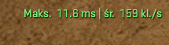
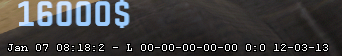
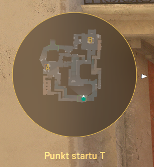

Włącza nowoczesny licznik w prawym górnym rogu, który pokazuje FPS oraz Frame Time (ms). Jest to oficjalny zamiennik starego net_graph w CS 2.
Usuwa tekst z numerem wersji i datą aktualizacji w lewym dolnym rogu ekranu. Wyłącz to, aby uzyskać czystszy i bardziej przejrzysty interfejs.
Zmienia skalowanie radaru tak, abyś widział całą mapę zamiast tylko swojej okolicy. Wyłącza też centrowanie na graczu, co pozwala efektywniej wykorzystać miejsce na ekranie.
Automatycznie zmienia broń na nóż i z powrotem po naciśnięciu klawisza Q. Jest to kluczowe dla snajperów (AWP/Scout), aby błyskawicznie zresetować lunetę po strzale.
Przypisuje funkcję skoku do kręcenia kółkiem myszy w górę (mwheelup). Ułatwia to idealne wyczucie momentu lądowania, co jest niezbędne do płynnego wykonywania Bunnyhopów.
Przypisuje funkcję skoku do kręcenia kółkiem myszy w dół (mwheeldown). Ułatwia to idealne wyczucie momentu lądowania, co jest niezbędne do płynnego wykonywania Bunnyhopów.